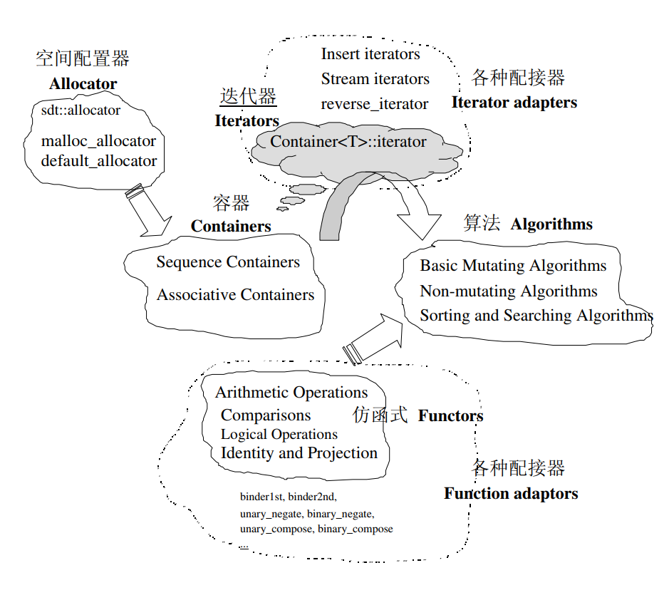
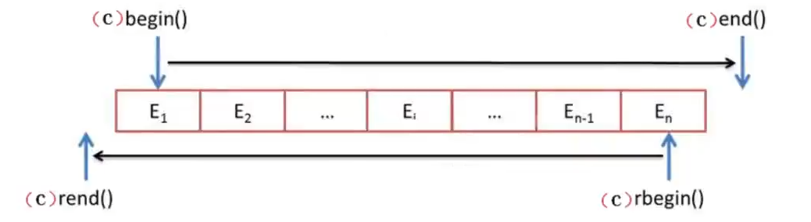

# STL 概述
C++ STL（标准模板库，Standard Template Library）是一套功能强大的 C++ 模板类，提供了通用的模板类和函数，这些模板类和函数可以实现多种流行和常用的算法和数据结构，如向量、链表、队列、栈。
STL 从广义上讲分为三类: algorithm (算法) 、container (容器)、iterator (迭代器)。容器和算法可以通过迭代器进行无缝的连接。
在 C++ 标准中，STL 被组织为下面 13 个头文件 <vector> 、 <list> 、 <map> 、 <set> 、 <queue> 、 <deque> 、 <stack> 、 <algorithm> 、 <iterator> 、 <functional> 、 <memory> 、 <numeric> 、 <utility>
STL 提供了六大组件，彼此组合套用协同工作。这六大组件分别是：
- 容器（Containers）：各种数据结构，如 vector、list、deque、set、map 等。从实现的角度来看，容器是一种 class template。
- 算法（Algorithms）：各种常用算法，提供了执行各种操作的方式，包括对容器内容执行初始化、排序、搜索和转换等操作，比如 sort、search、copy、erase。从实现的角度来看，STL 算法是一种 function template。
- 迭代器（Iterators）：迭代器用于遍历对象集合的元素，扮演容器与算法之间的胶合剂，是所谓的 “泛型指针”，共有 5 种类型，以及其他衍生变化。从实现角度来看，迭代器是一种将 operator、operator->、operator++、operator-- 等指针操作予以重载的 class template*。所有的 STL 容器附带有自己专属的迭代器，因为只有容器设计者才知道如何遍历自己的元素。
- 仿函数（Functors）：也称为函数对象（Function object），行为类似函数，可作为算法的某种策略。从实现角度来看，仿函数是一种重载了 operator () 的 class 或者 class template。
- 适配器（Adaptors）：一种用来修饰容器或者仿函数或迭代器接口的东西。例如 STL 提供的 queue 和 stack，就是一种空间配接器，因为它们的底部完全借助于 deque。
- 分配器（Allocators）：也称为空间配置器，负责空间的配置与管理。从实现的角度来看，配置器是一个实现了动态配置空间、空间管理、空间释放的 class template。
STL 六大组件的交互关系

使用 STL 的好处：
- STL 是 C++ 的一部分，因此不用额外安装什么，它被内建在你的编译器之内。
- STL 的一个重要特点是数据结构和算法的分离。(内部使用的模板，或者说泛型编程)
- 程序员可以不用思考 STL 具体的实现过程，只要能够熟练使用 STL，把精力用在开发上。
- STL 具有高可重用性、高性能、高移植性、跨平台等优点
- 高可重用性: STL 中几乎所有的代码的采用了模板类和模板函数的方式实现，这相当于传统的由函数和类组成的库来说提供了更好的代码重用机会。
- 高性能：底层使用的数据结构和算法比较优秀，如 map 是使用红黑树的变体实现的。（红黑树是平衡二叉树的一种）
- 高移植性：因为是内建在编译器之内，项目 A 中用 STL 编写的模块可以直接移植到项目 B 上。
- 跨平台：windows 上写的可以在 Linux 上运行 (反之亦可)
# STL 迭代器
-
什么是迭代器：
迭代器是一种检查容器内元素并且遍历容器内元素的数据类型。
-
迭代器的作用
迭代器提供对一个容器中的对象的访问方法，并且定义了容器中对象的范围。
-
为什么需要迭代器：
- STL 提供每种容器的实现原理各不相同，如果没有迭代器，我们需要记住每一种容器中对象的访问方法，这样会变得非常麻烦。
- 每个容器中都实现了一个迭代器用于对容器中对象的访问，虽然每个容器中的迭代器的实现方式不一样，但是对于用户来说操作方法是一致的，也就是说通过迭代器统一了对所有容器的访问方式。
- 无论哪个容器，访问当前元素的下一个元素我们都可以通过迭代器自增进行访问。
- 迭代器是为了提高编程效率而开发的。
# STL 容器
# 容器的分类
- 序列式容器（Sequence containers）
- 每个元素都有固定的位置，取决于插入的时机和地点，和元素值无关。
- vector、deque、list、stack、queue
- 关联式容器（Associated containers）
- 元素位置取决于特定的排序准则，和插入顺序无关。
- set、multiset、map、multimap
| 数据结构 | 描述 | 实现头文件 |
|---|---|---|
| 向量 (vector) | 连续存储的元素 | <vector> |
| 列表 (list) | 由节点组成的双向链表，每个结点包含着一个元素 | <list> |
| 栈 (stack) | 后进先出的值的排列 | <stack> |
| 队列 (queue) | 先进先出的值的排列 | <queue> |
| 优先队列 (priority_queue) | 元素的次序是由作用于所存储的值对上的某种谓词决定的一种队列 | <queue> |
| 双队列 (deque) | 连续存储的指向不同元素的指针所组成的数组 | <deque> |
| 集合 (set) | 由节点组成的红黑树，每个节点都包含着一个元素，节点之间以某种作用于元素对的谓词排列，没有两个不同的元素能够拥有相同的次序。 | <set> |
| 多重集合 (multiset) | 允许存在两个次序相等的元素的集合 | <set> |
| 映射 (map) | 由 {键，值} 对组成的集合，以某种作用于键上的谓词排列 | <map> |
| 多重映射 (multimap) | 允许键对有相等的次序的映射 | <map> |
# vector 容器
- vector 是将元素置于一个动态数组中加以管理的容器。
- vector 可以随机存取元素（支持索引值直接存取，用 [] 操作符或者 at () 方法）
- vector 尾部添加或移除元素非常快速。但是在中部或头部插入元素或移动元素比较费时。
- 在局部函数中开 vector 数组，是在堆空间里面开的，与开全局变量比较类似，所以经常见到在局部函数中开大容量数组。
# vector 的构造方法
-
vector 对象的默认构造
vector<T> vecT;
vector<int> vecInt; // 定义了一个存 int 的 vector 容器
vector<double> vecDouble; // 定义了一个存 double 的 vector 容器
vector<string> vecString; // 定义了一个存 String 的 vector 容器
class CA{}
vector<CA*> vecpCA; // 用于存放 CA 对象指针的 vector 容器
vector<CA> vecCA; // 用于存放 CA 对象的 vector 容器
// 由于容器元素的存放是按值复制的方式进行的，所以此时 CA 必须提供 CA 的拷贝构造函数，以保证 CA 对象间拷贝正常 -
vector 对象的带参构造
vector(begin, end); //构造函数将[begin,end)区间的元素拷贝给自身vector(n,elem); //构造函数将n个elem拷贝给自身vector(const vector &vec); //拷贝构造函数
int iArray[] = {0, 1, 2, 3, 4};
vector<int> vA(iArray, iArray+5);// 定义一个长度为 n 的数组，初始值默认为 0
vector<int> vB(vA.begin(), vA.end());
vector<int> vB(vA.begin(), vA.begin()+3);
vector<int> vC(3, 9); // 存放 3 个元素 9
vector<int> vD(vA);
二维初始化
定义第一维固定长度为 5，第二维可变化的二维数组
vector<int> v[5];// 定义可变长二维数组 | |
// 注意：行不可变（只有 5 行）, 而列可变，可以在指定行添加元素 | |
// 第一维固定长度为 5，第二维长度可以改变 |
行列均可变
// 初始化二维均可变长数组 | |
vector<vectot<int>> v;// 定义一个行和列均可变的二维数组 |
行列长度均固定 n + 1 行 m + 1 列初始值为 0
vector<vector<int>> a(n + 1, vector<int>(m + 1, 0)); |
c++17 或者 c++20 支持的形式（不常用）
vector a(n + 1, vector(m + 1, 0)); |
# vector 的赋值
vector.assign(begin, end); //将[begin, end)区间中的数据拷贝赋值给本身vector.assign(n, elem); //将n个elem拷贝赋值给本身vector& operator = (const vector &vec); //重载等号操作符vector.swap(vec); //将vec和本身的元素互换
vector<int> vecIntA, vecIntB, vecIntC, vecIntD; | |
int iArray[] = {0, 1, 2, 3, 4}; | |
vecIntA.assign(iArray, iArray+5); | |
vecIntB.assign(vecIntA.begin(), vecIntA.end()); // 用其他容器的迭代器作为参数 | |
vecIntC.assign(3, 9); | |
vecIntD = vecIntA; | |
vecIntA.swap(vecIntD); |
# vector 的迭代器
vector<int>::iterator iter;- vector 容器的迭代器属于 “随机访问迭代器”：迭代器一次可以移动多个位置
# 方法函数
知道了如何定义初始化可变数组，下面就需要知道如何添加，删除，修改数据。
| 代码 | 含义 |
|---|---|
front() |
返回第一个数据 O (1) |
pop_back() |
删除最后一个数据 O (1) |
push_back(element) |
在尾部加一个数据 O (1) |
size() |
返回实际数据个数（unsigned 类型）O (1) |
clear() |
清除元素个数 O (N)，N 为元素个数 |
resize(n, v) |
改变数组大小为 n ，新增空间数值赋为 v ，如果没有默认赋值为 0 |
insert(it, x) |
向任意迭代器 it 插入一个元素 x ，O(N) |
例： insert(c.begin()+2,-1) |
将 -1 插入 c[2] 的位置 |
erase(first,last) |
删除 [first,last) 的所有元素，O (N) |
begin() |
返回首元素的迭代器（通俗来说就是地址）O (1) |
end() |
返回最后一个元素后一个位置的迭代器（地址）O (1) |
empty() |
判断是否为空，为空返回真，反之返回假 O (1) |
注意： end() 返回的是最后一个元素的后一个位置的地址，不是最后一个元素的地址，所有 STL 容器均是如此
# 访问
-
下标访问
-
at()访问vec[idx]; // 返回索引 idx 所指的数据，如果 idx 越界，运行直接报错。
vec.at(idx); // 返回索引 idx 所指的数据，如果 idx 越界，抛出 out_of_range 异常。
// 添加元素for(int i = 0; i < 5; i++)
vi.push_back(i);
// 下标访问for(int i = 0; i < 5; i++)
cout << vi[i] << " ";
cout << "\n";
// 函数访问for(int i = 0; i < 5; i++)
cout << vi.at(i) << " ";
-
迭代器访问
// 迭代器访问vector<int>::iterator it;
// 相当于声明了一个迭代器类型的变量 it// 通俗来说就是声明了一个指针变量// 方式一：vector<int>::iterator it = vi.begin();
for(int i = 0; i < 5; i++)
cout << *(it + i) << " ";
cout << "\n";
// 方式二：vector<int>::iterator it;
for(it = vi.begin(); it != vi.end(); it ++)
cout << *it << " ";
//vi.end () 指向尾元素地址的下一个地址 -
C++11
只能遍历完整数组，如果要指定的内容进行遍历，需要另选方法。
auto 能够自动识别并获取类型。vector<int> v;
v.push_back(12);
v.push_back(241);
for(auto val : v)
cout << val << " "; // 12 241
vector 注意：
vi[i]和*(vi.begin() + i)等价vector和string的STL容器支持*(it + i)的元素访问，其它容器可能也可以支持这种方式访问，但用的不多。
# Vector 原理
- vector 是动态数组，所以和数组一样拥有一段连续的内存空间，并且起始地址不变。
- 因为 vector 地址空间是连续的，所以能高效的进行随机访问，时间复杂度为 o (1)。
- 在 vector 中插入和删除元素，需要对现有元素进行复制、移动，时间复杂度为 o (n)。
- 如果 vector 中存储的对象很大，或者构造函数复杂，那么插入等开销会很大。因为拷贝现有对象时需要调用拷贝构造函数。
- vector 扩容原理
- 新增元素：Vector 通过一个连续的数组存放元素，如果集合已满，在新增数据的时候，就会分配一块更大的内存，将原来的数据复制过来，释放之前的内存，在插入新增的元素。注意不是在原来空间后直接增加空间
- 对 vector 的任何操作，一旦引起空间重新配置，指向原 vector 的所有迭代器就都失效了。
- 不同的编译器实现的扩容方式不一样，VS2015 中以 1.5 倍扩容，GCC 以 2 倍扩容。
# deque 容器
- deque 是 “double-ended queue” 的缩写。
- deque 是双端数组而 vector 是单端的。
- deque 可以随机存取元素（支持索引存取，用 [] 操作符或 at () 方法）
- deque 头部尾部添加或移除元素都非常快 O (1)，在中部添加或移除元素比较费时。vector 只在尾部是 O (1)
#include <deque>- deque 和 vector 在操作上几乎一样，多 2 个函数。
push_front(x); //把x插入队首 O(1)pop_front(); //删除队首元素 O(1)
# list 容器
- list 是一个双向链表容器，可以高效地进行插入删除元素。
- list 不可以随机存取元素，所以不支持 [] 操作符和 at (pos) 函数
- 支持迭代器自增
it++;但不支持迭代器一次移动多个位置it+5;
# list 的构造方法
- list 对象的默认构造：
list<T> lst; - list 对象的带参数构造
list(n,elem); //构造函数将n个elem拷贝给自身list(beg,end); //构造函数将[beg,end)区间（迭代器）中的元素拷贝给自身list(const list &lst); //拷贝构造函数
# list 的迭代器
list 容器的迭代器 是 “双向迭代器”：从两个方向读写容器。除了提供前向迭代器的全部操作外，双向迭代器还提供前置和后置的自减运算。
list.begin(); //返回容器第一个元素的迭代器list.end(); //返回容器最后一个元素之后的迭代器list.rbegin(); //返回容器倒数第一个元素的迭代器list.rend(); //返回容器倒数第一个元素之后的迭代器

# 方法函数
| 代码 | 含义 |
|---|---|
front() |
返回第一个数据 O (1) |
back() |
返回最后一个数据 O (1) |
push_back(element) |
在尾部加一个数据 O (1) |
push_front(element) |
在头部加一个数据 O (1) |
pop_back() |
删除最后一个数据 O (1) |
pop_front() |
删除第一个数据 O (1) |
size() |
返回实际数据个数（unsigned 类型）O (1) |
clear() |
清除元素个数 O (N)，N 为元素个数 |
resize(n, v) |
改变数组大小为 n ，新增空间数值赋为 v ，如果没有默认赋值为 0 |
insert(it, x) |
向任意迭代器 it 插入一个元素 x ，O(N) |
例： insert(c.begin()+2,-1) |
将 -1 插入 c[2] 的位置 |
erase(first,last) |
删除 [first,last) 的所有元素，O (N) |
begin() |
返回首元素的迭代器（通俗来说就是地址）O (1) |
end() |
返回最后一个元素后一个位置的迭代器（地址）O (1) |
empty() |
判断是否为空，为空返回真，反之返回假 O (1) |
# stack
栈为数据结构的一种，是 STL 中实现的一个先进后出，后进先出的容器。
// 头文件需要添加 | |
#include<stack> | |
// 声明 | |
stack<int> s; | |
stack<string> s; | |
stack<node> s;//node 是结构体类型 |
# 方法函数
| 代码 | 含义 |
|---|---|
s.push(ele) |
元素 ele 入栈，增加元素 O (1) |
s.pop() |
移除栈顶元素 O (1) |
s.top() |
取得栈顶元素（但不删除）O (1) |
s.empty() |
检测栈内是否为空，空为真 O (1) |
s.size() |
返回栈内元素的个数 O (1) |
# 栈遍历
栈遍历
栈只能对栈顶元素进行操作，如果想要进行遍历，只能将栈中元素一个个取出来存在数组中
数组模拟栈进行遍历
通过一个数组对栈进行模拟，一个存放下标的变量 top 模拟指向栈顶的指针。
特点： 比 STL 的 stack 速度更快，遍历元素方便
int s[100]; // 栈 从左至右为栈底到栈顶 | |
int tt = -1; //tt 代表栈顶指针，初始栈内无元素，tt 为 - 1 | |
for(int i = 0; i <= 5; i++) | |
{ | |
// 入栈 | |
s[++tt] = i; | |
} | |
// 出栈 | |
int top_element = s[tt--]; | |
// 入栈操作示意 | |
// 0 1 2 3 4 5 | |
// tt | |
// 出栈后示意 | |
// 0 1 2 3 4 | |
// tt |
# queue
队列是一种先进先出的数据结构。
// 头文件 | |
#include<queue> | |
// 定义初始化 | |
queue<int> q; |
# 方法函数
| 代码 | 含义 |
|---|---|
q.front() |
返回队首元素 O (1) |
q.back() |
返回队尾元素 O (1) |
q.push(element) |
尾部添加一个元素 element 进队 O (1) |
q.pop() |
删除第一个元素 出队 O (1) |
q.size() |
返回队列中元素个数，返回值类型 unsigned int O(1) |
q.empty() |
判断是否为空，队列为空，返回 true O(1) |
# 队列模拟
使用 q[] 数组模拟队列
hh 表示队首元素的下标，初始值为 0
tt 表示队尾元素的下标，初始值为 -1 ，表示刚开始队列为空
#include <bits/stdc++.h> | |
using namespace std; | |
const int N = 1e5+5; | |
int q[N]; | |
int main() | |
{ | |
int hh = 0,tt = -1; | |
// 入队 | |
q[++tt] = 1; | |
q[++tt] = 2; | |
// 将所有元素出队 | |
while(hh <= tt) | |
{ | |
int t = q[hh++]; | |
printf("%d ",t); | |
} | |
return 0; | |
} |
# priority_queue
优先队列是在正常队列的基础上加了优先级，保证每次的队首元素都是优先级最大的。
可以实现每次从优先队列中取出的元素都是队列中优先级最大的一个。
它的底层是通过堆来实现的。
// 头文件 | |
#include<queue> | |
// 初始化定义 | |
priority_queue<int> q; |
# 函数方法
| 代码 | 含义 |
|---|---|
q.top() |
访问队首元素 |
q.push() |
入队 |
q.pop() |
堆顶（队首）元素出队 |
q.size() |
队列元素个数 |
q.empty() |
是否为空 |
注意没有 clear() ！ |
不提供该方法 |
优先队列只能通过 top() 访问队首元素（优先级最高的元素） |
# 设置优先级
- 基本数据类型的优先级
priority_queue<int> pq; // 默认大根堆，即每次取出的元素是队列中的最大值 | |
priority_queue<int, vector<int>, greater<int> > q; // 小根堆，每次取出的元素是队列中的最小值 |
参数解释：
- 第二个参数：
vector< int >是用来承载底层数据结构堆的容器，若优先队列中存放的是double型数据，就要填vector< double >
总之存的是什么类型的数据，就相应的填写对应类型。同时也要改动第三个参数里面的对应类型。 - 第三个参数：
less< int >表示数字大的优先级大，堆顶为最大的数字
greater< int >表示数字小的优先级大，堆顶为最小的数字
int 代表的是数据类型，也要填优先队列中存储的数据类型
下面介绍基础数据类型优先级设置的写法。
1. 基础写法（非常常用）
priority_queue<int> q1; // 默认大根堆，即每次取出的元素是队列中的最大值 | |
priority_queue<int, vector<int>, less<int> > q2; // 大根堆，每次取出的元素是队列中的最大值，同第一行 | |
priority_queue<int, vector<int>, greater<int> > q3; // 小根堆，每次取出的元素是队列中的最小值 |
2. 自定义排序（不常见，主要是写着麻烦）
下面的代码比较长，基础类型优先级写着太麻烦，用第一种即可。
struct cmp1 | |
{ | |
bool operator()(int x,int y) | |
{ | |
return x > y; | |
} | |
}; | |
struct cmp2 | |
{ | |
bool operator()(const int x,const int y) | |
{ | |
return x < y; | |
} | |
}; | |
priority_queue<int, vector<int>, cmp1> q1; // 小根堆 | |
priority_queue<int, vector<int>, cmp2> q2; // 大根堆 |
- 结构体优先级设置
即优先队列中存储结构体类型，必须要设置优先级，即结构体的比较运算（因为优先队列的堆中要比较大小，才能将对应最大或者最小元素移到堆顶）。
优先级设置可以定义在结构体内进行小于号重载，也可以定义在结构体外。
- 存储特殊类型的优先级
# set
-
set 容器中的元素不会重复，其中所包含的元素是唯一的，set 容器里的元素按一定的顺序排列。元素插入过程是按排序规则插入，所以不能指定插入位置。
即：set 里面的元素不重复 且有序
// 头文件#include<set>// 初始化定义set<int> s;
-
set 采用红黑树变体的数据结构实现，红黑树属于平衡二叉树。在插入和删除操作上比 vector 快。
-
set 不可以直接存取元素。（不可以使用
at(pos)和[ ]操作符） -
set支持唯一键值，每个元素值只能出现一次 -
multiset中同一值可以出现多次 -
不可以直接修改 set 中的元素值，因为该类容器是自动排序的。如果希望修改一个元素值，必须先删除原有的元素，再插入新的元素。
# 函数方法
| 代码 | 含义 |
|---|---|
s.begin() |
返回 set 容器的第一个元素的地址（迭代器）O (1) |
s.end() |
返回 set 容器的最后一个元素的下一个地址（迭代器）O (1) |
s.rbegin() |
返回逆序迭代器，指向容器元素最后一个位置 O (1) |
s.rend() |
返回逆序迭代器，指向容器第一个元素前面的位置 O (1) |
s.clear() |
删除 set 容器中的所有的元素，返回 unsigned int 类型 O (N) |
s.empty() |
判断 set 容器是否为空 O (1) |
s.insert() |
插入一个元素 |
s.size() |
返回当前 set 容器中的元素个数 O (1) |
erase(iterator) |
删除定位器 iterator 指向的值 |
erase(first,second） |
删除定位器 first 和 second 之间的值 |
erase(key_value) |
删除键值 key_value 的值 |
| 查找 | |
s.find(element) |
查找 set 中的某一元素，有则返回该元素对应的迭代器，无则返回结束迭代器 end () |
s.count(element) |
查找 set 中的元素出现的个数，由于 set 中元素唯一，此函数相当于查询 element 是否出现 |
s.lower_bound(k) |
返回大于等于 k 的第一个元素的迭代器 O (logN) |
s.upper_bound(k) |
返回大于 k 的第一个元素的迭代器 O (logN) |
# 访问
set<int> setIntA; | |
setIntA.insert(3); | |
setIntA.insert(1); | |
setIntA.insert(7); | |
setIntA.insert(5); | |
setIntA.insert(9); | |
set<int> setIntB(setIntA); // 1,3,5,7,9 | |
set<int> setIntC; | |
setIntC = setIntA; // 1,3,5,7,9 | |
setIntC.insert(6); | |
setIntC.swap(setIntA); |
# 函数对象 / 仿函数
set<int, less<int>> setIntA; // 升序排列，默认 = set<int> setIntA; | |
set<int, greater<int>> setIntB; // 降序排列 |
函数对象 functor：
-
尽管函数指针被广泛用于实现函数回调，但 C++ 还提供了一个重要的实现回调函数的方法，那就是函数对象 / 仿函数。
-
functor，是重载了 () 操作符的普通类对象，从语法上讲，他与普通函数行为类似。
-
greater<>和less<>就是函数对象 -
简易实现原理
p class greater{
public:
bool operator() (const int& iLeft, const int& iRight)
{return (iLeft > iRight); //less 实现则为 return (iLeft < iRight);
}}容器就是调用函数对象的 operator () 方法去比较两个值的大小。
# pair
pair 只含有两个元素，可以看作是只有两个元素的结构体。
应用：
- 代替二元结构体
- 作为 map 键值对进行插入（代码如下）
map<string,int>mp; | |
mp.insert(pair<string,int>("xingmaqi",1)); |
// 头文件 | |
#include<utility> | |
//1. 初始化定义 | |
pair<string,int> p("wangyaqi",1);// 带初始值的 | |
pair<string,int> p;// 不带初始值的 | |
//2. 赋值 | |
p = {"wang",18}; |
访问
pair.firstpair.second
// 定义结构体数组 | |
pair<int,int> p[20]; | |
for(int i = 0; i < 20; i++) | |
{ | |
cout << *(p[i].first) << " " << *(p[i].second); | |
} |
# map
映射类似于函数的对应关系，每个 x 对应一个 y ，而 map 是每个键 key 对应一个值 value 。和 python 的字典非常类似。
// 头文件 | |
#include<map> | |
// 初始化定义 | |
map<string,string> mp; | |
map<string,int> mp; | |
map<int,node> mp;//node 是结构体类型 |
map 特性：map 会按照键的顺序从小到大自动排序，键的类型必须可以比较大小
# 函数方法
| 代码 | 含义 |
|---|---|
mp.find(key) |
返回键为 key 的映射的迭代器 O (logN) 注意：用 find 函数来定位数据出现位置，它返回一个迭代器。当数据存在时，返回数据所在位置的迭代器，数据不存在时，返回 mp.end () |
mp.erase(it) |
删除迭代器对应的键和值 O (1) |
mp.erase(key) |
根据映射的键删除键和值 O (logN) |
mp.erase(first,last) |
删除左闭右开区间迭代器对应的键和值 O (last−first) |
mp.size() |
返回映射的对数 O (1) |
mp.clear() |
清空 map 中的所有元素 O (N) |
mp.insert() |
插入元素，插入时要构造键值对 |
mp.empty() |
如果 map 为空，返回 true，否则返回 false |
mp.begin() |
返回指向 map 第一个元素的迭代器（地址） |
mp.end() |
返回指向 map 尾部的迭代器（最后一个元素的下一个地址） |
mp.rbegin() |
返回指向 map 最后一个元素的迭代器（地址） |
mp.rend() |
返回指向 map 第一个元素前面 (上一个）的逆向迭代器（地址） |
mp.count(key) |
查看元素是否存在，因为 map 中键是唯一的，所以存在返回 1，不存在返回 0 |
mp.lower_bound() |
返回一个迭代器，指向键值 >= key 的第一个元素 |
mp.upper_bound() |
返回一个迭代器，指向键值 > key 的第一个元素 |
下面说明部分函数方法的注意点
注意：
查找元素是否存在时，可以使用
①mp.find()②mp.count()③mp[key]
但是第三种情况，如果不存在对应的key时，会自动创建一个键值对（产生一个额外的键值对空间）
所以为了不增加额外的空间负担，最好使用前两种方法
使用迭代器进行正反向遍历：
mp.begin() 和 mp.end() 用法：用于正向遍历 map
map<int,int> mp; | |
mp[1] = 2; | |
mp[2] = 3; | |
mp[3] = 4; | |
auto it = mp.begin(); | |
while(it != mp.end()) | |
{ | |
cout << it->first << " " << it->second << "\n"; | |
it ++; | |
} | |
/* 输出 | |
1 2 | |
2 3 | |
3 4 | |
*/ |
mp.rbegin() 和 mp.rend() 用于逆向遍历 map
map<int,int> mp; | |
mp[1] = 2; | |
mp[2] = 3; | |
mp[3] = 4; | |
auto it = mp.rbegin(); | |
while(it != mp.rend()) | |
{ | |
cout << it->first << " " << it->second << "\n"; | |
it ++; | |
} | |
/* 输出 | |
3 4 | |
2 3 | |
1 2 | |
*/ |
二分查找 lower_bound() upper_bound()
map 的二分查找以第一个元素（即键为准），对键进行二分查找
返回值为 map 迭代器类型
#include<bits/stdc++.h> | |
using namespace std; | |
int main() | |
{ | |
map<int, int> m<!--swig0-->;// 有序 | |
map<int, int>::iterator it1 = m.lower_bound(2); | |
cout << it1->first << "\n";//it1->first=2 | |
map<int, int>::iterator it2 = m.upper_bound(2); | |
cout << it2->first << "\n";//it2->first=6 | |
return 0; | |
} |
# 添加元素
// 先声明 | |
map<string,string> mp; | |
// 方式一 (查找键 + 赋值，性能问题) | |
mp["学习"] = "看书"; | |
mp["玩耍"] = "打游戏"; | |
// 方式二：插入元素构造键值对 | |
mp.insert(make_pair("vegetable","蔬菜")); | |
// 方式三 | |
mp.insert(pair<string,string>("fruit","水果")); | |
// 方式四 | |
mp.insert({"hahaha","wawawa"}); |
# 访问元素
** 下标访问：** 大部分情况用于访问单个元素
mp["菜哇菜"] = "强哇强"; | |
cout << mp["菜哇菜"] << "\n";// 只是简写的一个例子，程序并不完整 |
使用 find () 函数：成功返回对应的迭代器，失败返回 end () 的返回值
map<int, string>::iterator it = maps.find(3); |
使用 at () 函数：如果键值对不存在会抛出 out_of_range 异常
遍历访问：
方式一：迭代器访问
map<string,string>::iterator it; | |
for(it = mp.begin(); it != mp.end(); it++) | |
{ | |
// 键 值 | |
//it 是结构体指针访问所以要用 -> 访问 | |
cout << it->first << " " << it->second << "\n"; | |
//*it 是结构体变量 访问要用。访问 | |
//cout<<(*it).first<<" "<<(*it).second; | |
} |
方式二：智能指针访问
for(auto i : mp) | |
cout << i.first << " " << i.second << endl;// 键，值 |
方式三：对指定单个元素访问
map<char,int>::iterator it = mp.find('a'); | |
cout << it -> first << " " << it->second << "\n"; |
方式四：c++17 特性
for(auto [x, y] : mp) | |
cout << x << " " << y << "\n"; | |
//x,y 对应键和值 |
# 与 unordered_map 的比较
# 内部实现原理
- map：内部用红黑树实现，具有自动排序（按键从小到大）功能。
- unordered_map：内部用哈希表实现，内部元素无序杂乱。
# 效率比较
- map：
- 优点：内部用红黑树实现，内部元素具有有序性，查询删除等操作复杂度为 O (logN)
- 缺点：占用空间，红黑树里每个节点需要保存父子节点和红黑性质等信息，空间占用较大
- unordered_map：
- 优点：内部用哈希表实现，查找速度非常快（适用于大量的查询操作）。
- 缺点：建立哈希表比较耗时。
两者方法函数基本一样，差别不大。
注意：
随着内部元素越来越多，两种容器的插入删除查询操作的时间都会逐渐变大，效率逐渐变低。
使用
[]查找元素时，如果元素不存在，两种容器都是创建一个空的元素；如果存在，会正常索引对应的值。所以如果查询过多的不存在的元素值，容器内部会创建大量的空的键值对，后续查询创建删除效率会大大降低。查询容器内部元素的最优方法是：先判断存在与否，再索引对应值（适用于这两种容器）
// 以 map 为例
还有一种映射：
multimap 键可以重复，即一个键对应多个值
# string
string 是一个字符串类，和 char 型字符串类似。
可以把 string 理解为一个字符串类型，像 int 一样可以定义
# 初始化及定义
// 头文件 | |
#include<string> | |
//1. | |
string str1; // 生成空字符串 | |
//2. | |
string str2("123456789"); // 生成 "1234456789" 的复制品 | |
//3. | |
string str3("12345", 0, 3);// 结果为 "123" ，从 0 位置开始，长度为 3 | |
//4. | |
string str4("123456", 5); // 结果为 "12345" ，长度为 5 | |
//5. | |
string str5(5, '2'); // 结果为 "22222" , 构造 5 个字符 '2' 连接而成的字符串 | |
//6. | |
string str6(str2, 2); // 结果为 "3456789"，截取第三个元素（2 对应第三位）到最后 |
简单使用
-
访问单个字符：
#include<iostream>#include<string>using namespace std;
int main()
{string s = "xing ma qi!!!";
for(int i = 0; i < s.size(); i++)
cout << s[i] << " ";
return 0;
}
-
string 数组使用：
#include<iostream>#include<string>using namespace std;
int main()
{string s[10];
for(int i = 1; i < 10; i++)
{s[i] = "loading... " ;
cout << s[i] << i << "\n";
}return 0;
}结果：
loading... 1
loading... 2
loading... 3
loading... 4
loading... 5
loading... 6
loading... 7
loading... 8
loading... 9
# string 特性
-
支持比较运算符
string 字符串支持常见的比较操作符（>,>=,<,<=,==,!=），支持string与C-string的比较（如str < "hello"）。
在使用>,>=,<,<=这些操作符的时候是根据 “当前字符特性” 将字符按字典顺序进行逐一得 比较。字典排序靠前的字符小， 比较的顺序是从前向后比较，遇到不相等的字符就按这个位置上的两个字符的比较结果确定两个字符串的大小（前面减后面）。同时，`string (“aaaa”) 。
-
支持
+运算符，代表拼接字符串
string 字符串可以拼接，通过”+” 运算符进行拼接。string s1 = "123";
string s2 = "456";
string s = s1 + s2;
cout << s; //123456
-
# 读入详解
读入字符串，遇空格，回车结束
string s; | |
cin >> s; |
读入一行字符串（包括空格），遇回车结束
string s; | |
getline(cin, s); |
注意: getline(cin, s) 会获取前一个输入的换行符，需要在前面添加读取换行符的语句。如： getchar() 或 cin.get()
错误读取：
int n; | |
string s; | |
cin >> n; | |
getline(cin, s); // 此时读取相当于读取了前一个回车字符 |
正确读取：
int n; | |
string s; | |
cin >> n; | |
getchar(); //cin.get() | |
getline(cin, s);// 可正确读入下一行的输入 |
cin与cin.getline()混用cin 输入完后，回车，cin 遇到回车结束输入，但回车还在输入流中，cin 并不会清除，导致
getline()读取回车，结束。
需要在 cin 后面加cin.ignore()；主动删除输入流中的换行符。（不常用）
cin 和 cout 解锁
代码（写在 main 函数开头）：
ios::sync_with_stdio(false); | |
cin.tie(0),cout.tie(0); |
为什么要进行
cin和cout的解锁，原因是：在一些题目中，读入的数据量很大，往往超过了 1e5（105）的数据量，而
cin和cout的读入输出的速度很慢（是因为cin和cout为了兼容 C 语言的读入输出在性能上做了妥协），远不如scanf和printf的速度，具体原因可以搜索相关的博客进行了解。所以对
cin和cout进行解锁使cin和cout的速度几乎接近scanf和printf，避免输入输出超时。
注意： cin cout 解锁使用时，不能与 scanf,getchar, printf,cin.getline() 混用，一定要注意，会出错。
string 与 C 语言字符串（C-string）的区别
- string
是 C++ 的一个类，专门实现字符串的相关操作。具有丰富的操作方法，数据类型为string，字符串结尾没有\0字符- C-string
C 语言中的字符串，用 char 数组实现，类型为const char *, 字符串结尾以\0结尾
一般来说 string 向 char 数组转换会出现一些问题，所以为了能够实现转换，string 有一个方法 c_str() 实现 string 向 char 数组的转换。
string s = "xing ma qi"; | |
char s2[] = s.c_str(); |
# 函数方法
- 获取字符串长度
| 代码 | 含义 |
|---|---|
s.size() 和 s.length() |
返回 string 对象的字符个数，他们执行效果相同。 |
s.max_size() |
返回 string 对象最多包含的字符数，超出会抛出 length_error 异常 |
s.capacity() |
重新分配内存之前，string 对象能包含的最大字符数 |
- 插入
| 代码 | 含义 |
|---|---|
s.push_back() |
在末尾插入 |
例： s.push_back('a') |
末尾插入一个字符 a |
s.insert(pos,element) |
在 pos 位置插入 element |
例： s.insert(s.begin(),'1') |
在第一个位置插入 1 字符 |
s.append(str) |
在 s 字符串结尾添加 str 字符串 |
例： s.append("abc") |
在 s 字符串末尾添加字符串 “abc” |
- 删除
| 代码 | 含义 |
|---|---|
erase(iterator p) |
删除字符串中 p 所指的字符 |
erase(iterator first, iterator last) |
删除字符串中迭代器区间 [first,last) 上所有字符 |
erase(pos, len) |
删除字符串中从索引位置 pos 开始的 len 个字符 |
clear() |
删除字符串中所有字符 |
- 字符替换
| 代码 | 含义 |
|---|---|
s.replace(pos,n,str) |
把当前字符串从索引 pos 开始的 n 个字符替换为 str |
s.replace(pos,n,n1,c) |
把当前字符串从索引 pos 开始的 n 个字符替换为 n1 个字符 c |
s.replace(it1,it2,str) |
把当前字符串 [it1,it2) 区间替换为 str it1 ,it2 为迭代器哦 |
- 大小写转换
法一：
| 代码 | 含义 |
|---|---|
tolower(s[i]) |
转换为小写 |
toupper(s[i]) |
转换为大写 |
法二：
通过 stl 的 transform 算法配合 tolower 和 toupper 实现。
有 4 个参数，前 2 个指定要转换的容器的起止范围，第 3 个参数是结果存放容器的起始位置，第 4 个参数是一元运算。
string s; | |
transform(s.begin(),s.end(),s.begin(),::tolower);// 转换小写 | |
transform(s.begin(),s.end(),s.begin(),::toupper);// 转换大写 |
- 分割
| 代码 | 含义 |
|---|---|
s.substr(pos,n) |
截取从 pos 索引开始的 n 个字符 |
- 查找
| 代码 | 含义 |
|---|---|
s.find (str, pos) |
在当前字符串的 pos 索引位置（默认为 0）开始，查找子串 str，返回找到的位置索引，-1 表示查找不到子串 |
s.find (c, pos) |
在当前字符串的 pos 索引位置（默认为 0）开始，查找字符 c，返回找到的位置索引，-1 表示查找不到字符 |
s.rfind (str, pos) |
在当前字符串的 pos 索引位置开始，反向查找子串 s，返回找到的位置索引，-1 表示查找不到子串 |
s.rfind (c,pos) |
在当前字符串的 pos 索引位置开始，反向查找字符 c，返回找到的位置索引，-1 表示查找不到字符 |
s.find_first_of (str, pos) |
在当前字符串的 pos 索引位置（默认为 0）开始，查找子串 s 的字符，返回找到的位置索引，-1 表示查找不到字符 |
s.find_first_not_of (str,pos) |
在当前字符串的 pos 索引位置（默认为 0）开始，查找第一个不位于子串 s 的字符，返回找到的位置索引，-1 表示查找不到字符 |
s.find_last_of(str, pos) |
在当前字符串的 pos 索引位置开始，查找最后一个位于子串 s 的字符，返回找到的位置索引，-1 表示查找不到字符 |
s.find_last_not_of ( str, pos) |
在当前字符串的 pos 索引位置开始，查找最后一个不位于子串 s 的字符，返回找到的位置索引，-1 表示查找不到子串 |
#include<string> | |
#include<iostream> | |
int main() | |
{ | |
string s("dog bird chicken bird cat"); | |
// 字符串查找 ----- 找到后返回首字母在字符串中的下标 | |
// 1. 查找一个字符串 | |
cout << s.find("chicken") << endl;// 结果是：9 | |
// 2. 从下标为 6 开始找字符 'i'，返回找到的第一个 i 的下标 | |
cout << s.find('i',6) << endl;// 结果是：11 | |
// 3. 从字符串的末尾开始查找字符串，返回的还是首字母在字符串中的下标 | |
cout << s.rfind("chicken") << endl;// 结果是：9 | |
// 4. 从字符串的末尾开始查找字符 | |
cout << s.rfind('i') << endl;// 结果是：18 因为是从末尾开始查找，所以返回第一次找到的字符 | |
// 5. 在该字符串中查找第一个属于字符串 s 的字符 | |
cout << s.find_first_of("13br98") << endl;// 结果是：4---b | |
// 6. 在该字符串中查找第一个不属于字符串 s 的字符 ------ 先匹配 dog，然后 bird 匹配不到，所以打印 4 | |
cout << s.find_first_not_of("hello dog 2006") << endl; // 结果是：4 | |
cout << s.find_first_not_of("dog bird 2006") << endl; // 结果是：9 | |
// 7. 在该字符串最后中查找第一个属于字符串 s 的字符 | |
cout << s.find_last_of("13r98") << endl;// 结果是：19 | |
// 8. 在该字符串最后中查找第一个不属于字符串 s 的字符 ------ 先匹配 t--a---c，然后空格匹配不到，所以打印 21 | |
cout << s.find_last_not_of("teac") << endl;// 结果是：21 | |
} |
- 排序
sort(s.begin(),s.end()); // 按 ASCII 码排序 |
# bitset
bitset 在 bitset 头文件中，它类似数组，并且每一个元素只能是０或１，每个元素只用１bit 空间
// 头文件 | |
#include<bitset> |
# 初始化定义
初始化方法
| 代码 | 含义 |
|---|---|
bitset < n >a |
a 有 n 位，每位都为 0 |
bitset < n >a(b) |
a 是 unsigned long 型 u 的一个副本 |
bitset < n >a(s) |
a 是 string 对象 s 中含有的位串的副本 |
bitset < n >a(s,pos,n) |
a 是 s 中从位置 pos 开始的 n 个位的副本 |
注意：
n必须为常量表达式
演示代码：
#include<bits/stdc++.h> | |
using namespace std; | |
int main() | |
{ | |
bitset<4> bitset1; // 无参构造，长度为４，默认每一位为０ | |
bitset<9> bitset2(12); // 长度为 9，二进制保存，前面用０补充 | |
string s = "100101"; | |
bitset<10> bitset3(s); // 长度为 10，前面用０补充 | |
char s2[] = "10101"; | |
bitset<13> bitset4(s2); // 长度为 13，前面用０补充 | |
cout << bitset1 << endl; //0000 | |
cout << bitset2 << endl; //000001100 | |
cout << bitset3 << endl; //0000100101 | |
cout << bitset4 << endl; //0000000010101 | |
return 0; | |
} |
# 特性
bitset 可以进行位操作
bitset<4> foo (string("1001")); | |
bitset<4> bar (string("0011")); | |
cout << (foo ^= bar) << endl;// 1010 (foo 对 bar 按位异或后赋值给 foo) | |
cout << (foo &= bar) << endl;// 0010 (按位与后赋值给 foo) | |
cout << (foo |= bar) << endl;// 0011 (按位或后赋值给 foo) | |
cout << (foo <<= 2) << endl;// 1100 (左移２位，低位补０，有自身赋值) | |
cout << (foo >>= 1) << endl;// 0110 (右移１位，高位补０，有自身赋值) | |
cout << (~bar) << endl;// 1100 (按位取反) | |
cout << (bar << 1) << endl;// 0110 (左移，不赋值) | |
cout << (bar >> 1) << endl;// 0001 (右移，不赋值) | |
cout << (foo == bar) << endl;//false (0110==0011 为 false) | |
cout << (foo != bar) << endl;//true (0110!=0011 为 true) | |
cout << (foo & bar) << endl;// 0010 (按位与，不赋值) | |
cout << (foo | bar) << endl;// 0111 (按位或，不赋值) | |
cout << (foo ^ bar) << endl;// 0101 (按位异或，不赋值) |
访问
// 可以通过 [] 访问元素 (类似数组)，注意最低位下标为０，如下： | |
bitset<4> foo ("1011"); | |
cout << foo[0] << endl; //1 | |
cout << foo[1] << endl; //1 | |
cout << foo[2] << endl; //0 |
# 方法函数
| 代码 | 含义 |
|---|---|
b.any() |
b 中是否存在置为 1 的二进制位，有 返回 true |
b.none() |
b 中是否没有 1，没有 返回 true |
b.count() |
b 中为 1 的个数 |
b.size() |
b 中二进制位的个数 |
b.test(pos) |
测试 b 在 pos 位置是否为 1，是 返回 true |
b[pos] |
返回 b 在 pos 处的二进制位 |
b.set() |
把 b 中所有位都置为 1 |
b.set(pos) |
把 b 中 pos 位置置为 1 |
b.reset() |
把 b 中所有位都置为 0 |
b.reset(pos) |
把 b 中 pos 位置置为 0 |
b.flip() |
把 b 中所有二进制位取反 |
b.flip(pos) |
把 b 中 pos 位置取反 |
b.to_ulong() |
用 b 中同样的二进制位返回一个 unsigned long 值 |
# array
头文件
#include<array> |
array 是 C++11 新增的容器，效率与普通数据相差无几，比 vector 效率要高，自身添加了一些成员函数。
和其它容器不同，array 容器的大小是固定的，无法动态的扩展或收缩，只允许访问或者替换存储的元素。
注意：
array 的使用要在 std 命名空间里
# 声明与初始化
基础数据类型
// 声明一个大小为 100 的 `int` 型数组，元素的值不确定 | |
array<int, 100> a; | |
// 声明一个大小为 100 的 int 型数组，初始值均为 0 初始值与默认元素类型等效 | |
array<int, 100> a{}; | |
// 声明一个大小为 100 的 int 型数组，初始化部分值，其余全部为 0 | |
array<int, 100> a{1, 2, 3}; | |
// 或者可以用等号 | |
array<int, 100> a = {1, 2, 3}; |
高级数据类型
不同于数组的是对元素类型不做要求，可以套结构体
array<string, 2> s = {"ha", string("haha")}; | |
array<node, 2> a; |
# 存取元素
-
修改元素
array<int, 4> a = {1, 2, 3, 4};
a[0] = 4;
-
访问元素
下标访问
array<int, 4> a = {1, 2, 3, 4};
for(int i = 0; i < 4; i++)
cout << a[i] << " \n"[i == 3];
利用
auto访问for(auto i : a)
cout << i << " ";
迭代器访问
auto it = a.begin();
for(; it != a.end(); it++)
cout << *it << " ";
at()函数访问下标为
1的元素加上下标为2的元素，答案为5array<int, 4> a = {1, 2, 3, 4};
int res = a.at(1) + a.at(2);
cout << res << "\n";
get方法访问将
a数组下标为1位置处的值改为x注意：获取的下标只能写数字，不能填变量
get<1>(a) = x;
# 成员函数
| 成员函数 | 功能 |
|---|---|
begin() |
返回容器中第一个元素的访问迭代器（地址） |
end() |
返回容器最后一个元素之后一个位置的访问迭代器（地址） |
rbegin() |
返回最后一个元素的访问迭代器（地址） |
rend() |
返回第一个元素之前一个位置的访问迭代器（地址） |
size() |
返回容器中元素的数量，其值等于初始化 array 类的第二个模板参数 N |
max_size() |
返回容器可容纳元素的最大数量，其值始终等于初始化 array 类的第二个模板参数 N |
empty() |
判断容器是否为空 |
at(n) |
返回容器中 n 位置处元素的引用，函数会自动检查 n 是否在有效的范围内，如果不是则抛出 out_of_range 异常 |
front() |
返回容器中第一个元素的直接引用，函数不适用于空的 array 容器 |
back() |
返回容器中最后一个元素的直接引用，函数不适用于空的 array 容器。 |
data() |
返回一个指向容器首个元素的指针。利用该指针，可实现复制容器中所有元素等类似功能 |
fill(x) |
将 x 这个值赋值给容器中的每个元素，相当于初始化 |
array1.swap(array2) |
交换 array1 和 array2 容器中的所有元素，但前提是它们具有相同的长度和类型 |
# 部分用法示例
data()
指向底层元素存储的指针。对于非空容器，返回的指针与首元素地址比较相等。
at()
下标为 1 的元素加上下标为 2 的元素，答案为 5
array<int, 4> a = {1, 2, 3, 4}; | |
int res = a.at(1) + a.at(2); | |
cout << res << "\n"; |
fill()
array 的 fill() 函数，将 a 数组全部元素值变为 x
a.fill(x); |
另外还有其它的 fill() 函数：将 a 数组 [begin,end) 全部值变为 x
fill(a.begin(), a.end(), x); |
get 方法获取元素值
将 a 数组下标为 1 位置处的值改为 x
注意：获取的下标只能写数字，不能填变量
get<1>(a) = x; |
排序
sort(a.begin(), a.end()); |
# tuple
tuple 模板是 pair 的泛化，可以封装不同类型任意数量的对象。
可以把 tuple 理解为 pair 的扩展，tuple 可以声明二元组，也可以声明三元组。
tuple 可以等价为结构体使用
头文件
#include <tuple> |
# 声明初始化
声明一个空的 tuple 三元组
tuple<int, int, string> t1; |
赋值
t1 = make_tuple(1, 1, "hahaha"); |
创建的同时初始化
tuple<int, int, int, int> t2(1, 2, 3, 4); |
可以使用 pair 对象构造 tuple 对象，但 tuple 对象必须是两个元素
auto p = make_pair("wang", 1); | |
tuple<string, int> t3 {p}; // 将 pair 对象赋给 tuple 对象 |
# 元素操作
获取 tuple 对象 t 的第一个元素
int first = get<0>(t); |
修改 tuple 对象 t 的第一个元素
get<0>(t) = 1; |
# 函数操作
获取元素个数
tuple<int, int, int> t(1, 2, 3); | |
cout << tuple_size<decltype(t)>::value << "\n"; // 3 |
获取对应元素的值
通过 get(obj) 方法获取， n 必须为数字不能是变量
tuple<int, int, int> t(1, 2, 3); | |
cout << get<0>(t) << '\n'; // 1 | |
cout << get<1>(t) << '\n'; // 2 | |
cout << get<2>(t) << '\n'; // 3 |
通过 tie 解包 获取元素值
tie 可以让 tuple 变量中的三个值依次赋到 tie 中的三个变量中
int one, three; | |
string two; | |
tuple<int, string, int> t(1, "hahaha", 3); | |
tie(one, two, three) = t; | |
cout << one << two << three << "\n"; // 1hahaha3 |
# STL 函数
# accumulate
-
accumulate(beg, end, init) -
** 复杂度：**O (N)
-
作用：对一个序列的元素求和
-
init为对序列元素求和的初始值 -
返回值类型：与
init一致 -
基础累加求和：
p int a[]={1,3,5,9,10};
// 对 [0,2] 区间求和，初始值为 0，结果为 0+1+3+5=9int res1 = accumulate(a, a + 3, 0);
// 对 [0,3] 区间求和，初始值为 5，结果为 5+1+3+5+9=23int res2 = accumulate(a, a + 4, 5);
-
** 自定义二元对象求和：** 使用 lambda 表达式
p typedef long long ll;
struct node
{ll num;}st[10];
for(int i = 1; i <= n; i++)
st[i].num = i + 10000000000;
// 返回值类型与 init 一致，同时注意参数类型（a）也要一样// 初始值为 1，累加 1+10000000001+10000000002+10000000003=30000000007ll res = accumulate(st + 1, st + 4, 1ll, [](ll a,node b){
return a + b.num;
});
# atoi
-
atoi(const char *) -
将字符串转换为
int类型 -
注意参数为
char型数组，如果需要将 string 类型转换为 int 类型，可以使用stoi函数（参考下文），或者将string类型转换为const char *类型。 -
关于输出数字的范围：
atoi不做范围检查，如果超出上界，输出上界，超出下界，输出下界。
stoi会做范围检查，默认必须在int范围内，如果超出范围，会出现 RE（Runtime Error）错误。 -
p string s = "1234";
int a = atoi(s.c_str());
cout << a << "\n"; // 1234
p char s[] = "1234";
int a = atoi(s);
cout << a << "\n";
# stoi
-
stoi(const string*) -
将对应 string 类型字符串转换为数字
-
注意参数为
string字符串类型。关于输出数字的范围：
stoi会做范围检查，默认必须在int范围内，如果超出范围，会出现 RE（Runtime Error）错误。
atoi不做范围检查，如果超出上界，输出上界，超出下界，输出下界。 -
string s = "1234";
int a = atoi(s);
cout << a << "\n"; // 1234
# iota
-
iota(beg, end) -
让序列递增赋值
-
p vector<int> a(10);
iota(a.begin(), a.end(), 0);
for(auto i : a)
cout << i << " ";
// 0 1 2 3 4 5 6 7 8 9
# to_string
-
将数字转化为字符串，支持小数（double）
-
int a = 12345678;
cout << to_string(a) << '\n';
# fill
-
fill(beg,end,num) -
对一个序列进行初始化赋值
-
复杂度： O(N)
-
p // 对 a 数组的所有元素赋 1int a[5];
fill(a,a+5,1);
for(int i=0;i<5;i++)
cout<<a[i]<<" ";
//1 1 1 1 1 -
注意区分 memset：
memset()是按字节进行赋值，对于初始化赋0或-1有比较好的效果.如果赋某个特定的数会出错，赋值特定的数建议使用
fill()
# reverse
-
reverse(beg,end) -
对序列进行翻转
-
复杂度： O(N)
-
p string s = "abcde";
reverse(s.begin(), s.end());// 对 s 进行翻转
cout << s << '\n';//edcba
// 对 a 数组进行翻转int a[] = {1, 2, 3, 4};
reverse(a, a + 4);
cout << a[0] << a[1] << a[2] << a[3];//4321
# sort
-
sort(beg, end) -
sort(beg, end, cmp)再定义一个比较函数，通常对条件筛选进行排序，一般与结构体连用。
-
对一个序列进行排序
-
复杂度： O(NlogN)
-
p // 对 a 数组的 [1,n] 位置进行从小到大排序sort(a + 1, a + 1 + n);
// 对 a 数组的 [0,n-1] 位置从大到小排序sort(a, a + n, greater<int>());
// 对 a 数组的 [0,n-1] 位置从小到大排序sort(a, a + n, less<int>());
// 自定义排序，定义比较函数bool cmp(node a,node b)
{// 按结构体里面的 x 值降序排列return a.x > b.x;
}sort(node, node + n, cmp); // 只能接受 以函数为形式的自定义排序规则，无法接受以结构体为形式的自定义排序规则
# stable_sort
# is_sorted
# unique
# transform
# lower_bound + upper_bound
-
二分查找
-
复杂度： O(logN)
-
// 在 a 数组中查找第一个大于等于 x 的元素，返回该元素的地址lower_bound(a, a + n, x);
// 在 a 数组中查找第一个大于 x 的元素，返回该元素的地址upper_bound(a, a + n, x);
// 如果未找到，返回尾地址的下一个位置的地址
# max_element+min_element
# max+min
# minmax
# minmax_element
# nth_element
# next_permutation
# partial_sort
# random_shuffle
# __gcd
# __lg
# _builtin 内置位运算函数
# __builtin_ffs
# __builtin_popcount
# __builtin_ctz
# __builtin_clz
# __builtin_parity
一．
二 vector 扩容原理
1 新增元素：Vector 通过一个连续的数组存放元素，如果集合已满，在新增数据的时候，就会分配一块更大的内存，将原来的数据复制过来，释放之前的内存，在插入新增的元素。注意不是在原来空间后直接增加空间
2 对 vector 的任何操作，一旦引起空间重新配置，指向原 vector 的所有迭代器就都失效了。
3 不同的编译器实现的扩容方式不一样，VS2015 中以 1.5 倍扩容，GCC 以 2 倍扩容。
三 vector 扩容为什么以 2 倍增长
1 时间和空间的权衡，简单来说， 空间分配的多，平摊时间复杂度低，但浪费空间也多。
2 均摊添加每个元素的开销最小。
四 vector 扩容为什么以 1.5 倍增长
理想分配方案是是在第 N 次分配的时候能重用之前 N-1 次释放的内存，如果按照 1.5 分配，1，1.5，3，4.5…… 当你需要分配 4.5 时，前面已分配 5.5，你可以直接利用，把旧数据 move 过去。但选择两倍的增长比如像这样：1，2，4，8，16，32，… 每次需要申请的空间都大于用到前面释放的内存 (4>2+1)，无法重用。
五 vector 常用接口：
・清空 vector 可以使用成员函数 c.clear ()
・判断 vector 是否为空，可以使用成员函数 empty ()，如果为空返回 true，否则返回 false
・vector 输出最后一个元素的引用可以用 back () 成员函数，如果容器为空，则行为未定义
・vector 输出第一个元素的引用可以用 front () 成员函数，如果容器为空，则行为未定义
・vector 支持用下标访问元素，类似数组一样 c [n] 其中 n 是一个无符号整数，如果 n 大于容器的长度，那么行为未定义
・vector 为了防止越界访问，其中有成员函数 c.at (n)，返回下标为 n 的元素的引用。如果下标越界，那么抛出 out_of_range 的异常
・pop_back () 成员函数用来删除 vector 中的最后一个元素，如果容器为空会出现未定义行为。
・c.erase (it) 成员函数，删除迭代器 it 所指向的元素，返回一个指向被删除元素之后的迭代器，如果 it 指向最后一个元素，那么返回以为尾后迭代器（通常是 end ()）。若 it 就是 end ()，那么行为未定义。
・c.erase (beg,ed) 删除 [beg,ed) 范围的元素，同时返回最后一个元素的后面的迭代器，如果 ed 就是尾后迭代器，那么还返回一个尾后迭代器。
・vector 中 begin 和 end 函数返回的是什么？
begin 返回的是第一个元素的迭代器，end 返回的是最后一个元素后面位置的迭代器。前闭后开区间【）
・vector 中的 reserve 和 resize 的区别
reserve 是直接扩充到已经确定的大小，可以减少多次开辟、释放空间的问题（优化 push_back），就可以 提高效率，其次还可以减少多次要拷贝数据的问题。reserve 只是保证 vector 中的空间大小（capacity）最少 达到参数所指定的大小 n。reserve () 只有一个参数。
resize () 可以改变有效空间的大小，也有改变默认值的功能。capacity 的大小也会随着改变。resize () 可以有 多个参数。
・vector 中的 size 和 capacity 的区别
size 表示当前 vector 中有多少个元素（finish - start）;
capacity 函数则表示它已经分配的内存中可以容纳多少元素（end_of_storage - start）;
・vector 迭代器失效的情况
当插入一个元素到 vector 中，由于引起了内存重新分配，所以指向原内存的迭代器全部失效。 当删除容器中一个元素后，该迭代器所指向的元素已经被删除，那么也造成迭代器失效。erase 方法会返回下 一个有效的迭代器，所以当我们要删除某个元素时，需要 it=vec.erase (it)。
・正确释放 vector 的内存 (clear (), swap (), shrink_to_fit ())
vec.clear ()：清空内容，但是不释放内存。
vector ().swap (vec)：清空内容，且释放内存，想得到一个全新的 vector。 vec.shrink_to_fit ()：请求容器降低其 capacity 和 size 匹配。 vec.clear ();vec.shrink_to_fit ();：清空内容，且释放内存。
・vector 中 erase 方法与 algorithn 中的 remove 方法区别
vector 中 erase 方法真正删除了元素，迭代器不能访问了。
remove 只是简单地将元素移到了容器的最后面，迭代器还是可以访问到。因为 algorithm 通过迭代器进行操作，不知道容器的内部结构，所以无法进行真正的删除。
六 List 原理
list 是由双向链表实现的，因此内存空间是不连续的。
list 的随机访问效率不好，需要遍历元素，时间复杂度为 o (n)。
3. 底层是双向链表，所以每个元素有两个指针的额外空间开销。
4. 在任何位置都能高效地插入和删除元素。只要改变元素的指针值，不需要拷贝元素。
七 vector、list、queue 选择原则：
1 需要对数据高效地随机访问 (存取)，而不在乎插入和删除的效率，采用 vector
2 需要大量插入、删除数据，而不关心随机访问数据，采用 list
3 需要随机访问数据，而且关心前后增删数据的能力，采用 deque
4 对数据中间的增删操作比较多：采用 list，建议在排序的基础上，批量进行增删可以对运行效率提供最大的保证
八 map 的底层实现
容器的数据结构是采用红黑树进行管理，插入的元素健位不允许重复，所使用的节点元素的比较函数，只对元素的健值进行比较，元素的各项数据可通过健值检索出来。map 容器是一种关联容器。
九 map 和 unordered_map 的实现机理：
map: 是基于红黑树来实现的（红黑树是非常严格的平衡二叉搜索树），红黑树具有自动排序功能，红黑树的每一个节点都代表着 map 中的一个元素，因此对于 map 的查找，删除和插入操作都是对红黑树的操作。
unordered_map: 是基于哈希表来实现的，查找的时间复杂度是 O (1), 在海量数据处理中有着广泛的应用。
十 map 和 unordered_map 的优缺点
map 的优点：（1）map 是有序的（2）基于红黑树实现，查找的时间复杂度是 O (n)
map 的缺点：空间占用率比较高，因为内部实现了红黑树，虽然提高了运行效率，但是每个节点都要保存父亲节点和孩子节点和红黑树的性质，使得每一个节点都占用大量的空间。
适用的情况：对于要有序的结构，适用 map
unordered_map 的优点：因为内部是哈希表来实现的，所以查找效率会非常高
unordered_map 的缺点：哈希表的建立比较费时
适用的情况：对于查找问题，适用 unordered_map 会更好一点。
十一 Map 插入元素方法
map<int, string> mapStudent;
1 mapStudent.insert(pair<int, string>(1, “student_one”));
2 mapStudent.insert(map<int, string>::value_type (1, “student_one”));
3 mapStudent[1] = “student_one”;
以上三种用法，虽然都可以实现数据的插入，但是它们是有区别的，当然了第一种和第二种在效果上是完成一样的，用 insert 函数插入数据，在数据的插入上涉及到集合的唯一性这个概念，即当 map 中有这个关键字时，insert 操作是插入数据不了的，但是用数组方式就不同了，它可以覆盖以前该关键字对应的值
十二 为何 map 和 set 的插入删除效率比其他序列容器高
因为不需要内存拷贝和内存移动
十三 当数据元素增多时（从 10000 到 20000），map 的 set 的查找速度会怎样 变化？
RB-TREE 用二分查找法，时间复杂度为 logn，所以从 10000 增到 20000 时，查找次数从 log10000=14 次到 log20000=15 次，多了 1 次而已。
十四 map 、set、multiset、multimap 的特点
set 和 multiset 会根据特定的排序准则自动将元素排序，set 中元素不允许重复，multiset 可以重复。 map 和 multimap 将 key 和 value 组成的 pair 作为元素，根据 key 的排序准则自动将元素排序（因为红黑树也是 二叉搜索树，所以 map 默认是按 key 排序的），map 中元素的 key 不允许重复，multimap 可以重复。 map 和 set 的增删改查速度为都是 logn，是比较高效的。
十五 为何 map 和 set 每次 insert 之后， 以前保存的 iterator 不会失效？
存储的是结点，不需要内存拷贝和内存移动。 插入操作只是结点指针换来换去，结点内存没有改变。而 iterator 就像指向结点的指针，内存没变，指向内 存的指针也不会变。 6
十六 为何 map 和 set 不能像 vector 一样有个 reserve 函数来预分配数据？
在 map 和 set 内部存储的已经不是元素本身了，而是包含元素的结点。也就是说 map 内部使用的 Alloc 并不是 map 声明的时候从参数中传入的 Alloc。
十七 set 底层实现
底层是红黑树，set 会根据待定的排序准则，自动将元素排序。不允许元素重复。
十八 set, multiset (map,multimap)
set 和 multiset 会根据特定的排序准则自动将元素排序，set 中元素不允许重复，multiset 可以重复。因为是排序的，所以 set 中的元素不能被修改，只能删除后再添加。
十九 set 的底层实现实现为什么不用哈希表而使用红黑树？
set 中元素是经过排序的，红黑树也是有序的，哈希是无序的 如果只是单纯的查找元素的话，那么肯定要选哈希表了，因为哈希表在的最好查找时间复杂度为 O (1)，并且 如果用到 set 中那么查找时间复杂度的一直是 O（1），因为 set 中是不允许有元素重复的。而红黑树的查找时 间复杂度为 O (lgn)
二十 hash 表
hash 表的实现，包括 STL 中的哈希桶长度常数。
hash 表的实现主要涉及两个问题：散列函数和碰撞处理。
1）hash function （散列函数）。最常见的散列函数：f (x) = x % TableSize .
2）碰撞问题（不同元素的散列值相同）。解决碰撞问题的方法有许多种，包括线性探测、二次探测、开链等做法。SGL 版本使用开链法，使用一个链表保持相同散列值的元素。
二十一 你怎样理解迭代器？
Iterator (迭代器) 用于提供一种方法顺序访问一个聚合对象中各个元素，而又不需暴露该对象的内部表示，相当于智能指针。
二十二 迭代器失效问题
vector 迭代器
当插入一个元素后，插入点之前的迭代器如果未扩容则不受影响，插入点之后的迭代器失效；
当插入一个元素后，capacity 如果有变化，则容器需要重新分配内存，所有迭代器都会失效；
当进行删除操作后，指向删除点及之后元素的迭代器全部失效。
deque 迭代器
在容器 begin/end 插入操作所有迭代器不受影响；
在容器非 begin/end 的位置插入和删除操作都会使指向该容器元素的所有迭代器失效。
在容器 begin/end 删除元素会使指向被删除元素的迭代器失效；
List/forward_list 迭代器
list insert 操作不会使 list 迭代器失效；
list erase 操作会使当前指向被删除元素的迭代器失效，其它迭代器正常。
set 迭代器
set 的 insert 操作不会使 set 迭代器失效；
set erase 操作会使当前指向被删除元素的迭代器失效，其它迭代器正常。
map 迭代器
map 的 insert 操作不会使 map 迭代器失效；
map erase 删除操作会使当前指向被删除元素的迭代器失效
二十三 vector 为何每次 insert 之后，以前保存的 iterator 不会失效？
答:iterator 这里就相当于指向节点的指针，内存没有变，指向内存的指针怎么会失效呢 (当然被删除的那个元素本身已经失效了)。相对于 vector 来说，每一次删除和插入，指针都有可能失效，调用 push_back 在尾部插入也是如此。因为为了保证内部数据的连续存放，iterator 指向的那块内存在删除和插入过程中可能已经被其他内存覆盖或者内存已经被释放了。即使时 push_back 的时候，容器内部空间可能不够，需要一块新的更大的内存，只有把以前的内存释放，申请新的更大的内存，复制已有的数据元素到新的内存，最后把需要插入的元素放到最后，那么以前的内存指针自然就不可用了。特别时在和 find 等算法在一起使用的时候，牢记这个原则：不要使用过期的 iterator。
二十四 vector、list、map、deque 用 erase（it）后，迭代器的变化。
vector 和 deque 是序列式容器，其内存分别是连续空间和分段连续空间，删除迭代器 it 后，其后面的迭代器都失效了，此时 it 及其后面的迭代器会自动加 1，使 it 指向被删除元素的下一个元素。
list 删除迭代器 it 时，其后面的迭代器都不会失效，将前面和后面连接起来即可。
map 也是只能使当前删除的迭代器失效，其后面的迭代器依然有效。
二十五 不允许有遍历行为的容器有哪些（不提供迭代器）？
1）queue，除了头部外，没有其他方法存取 deque 的其他元素。
2）stack（底层以 deque 实现），除了最顶端外，没有任何其他方法可以存取 stack 的其他元素。
3）heap，所有元素都必须遵循特别的排序规则，不提供遍历功能。
二十六 stl 中 alloc
SGI 版本 STL 的默认配置器 std::alloc。参见：《STL 源码剖析》
1）考虑到小型区块所可能造成的内存碎片问题，SGI 设计了双层配置器。第一级配置器直接使用 malloc () 和 free ()；第二级则视情况采取不同的策略：当配置区块超过 128bytes 时，视为 “足够大”，便调用第一级配置器；当配置区块小于 128bytes 时，视之为 “过小”，为了降低额外负担，便采用 memory pool（内存池）整理方式，而不在求助于第一级配置器。
2）内存池的核心：内存池和 16 个自由链表（各自管理 8,16，…，128bytes 的小额区块）。在分配一个小区块时，首先在所属自由链表中寻找，如果找到，直接抽出分配；若所属自由链表为空，则请求内存池为所属自由链表分配空间；默认情况下，为该自由链表分配 20 个区块，若内存池剩余容量不足，则分配可分配的最大容量；若内存池连一个区块都无法分配，则调用 chunk_alloc 为内存池分配一大块区块；若内存不足，则尝试调用 malloc 分配，否则返回 bad_alloc 异常。
二十七 STL 线程不安全的情况
在对同一个容器进行多线程的读写、写操作时；
在每次调用容器的成员函数期间都要锁定该容器；
在每个容器返回的迭代器（例如通过调用 begin 或 end）的生存期之内都要锁定该容器； 在每个在容器上调用的算法执行期间锁定该容器。
二十八 priority_queue 的底层原理
priority_queue：优先队列，其底层是用堆来实现的。在优先队列中，队首元素一定是当前队列中优先级最 高的那一个。